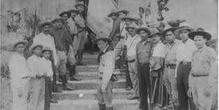

Universidad Nacional De Ingeniería
Soberanía, Dignidad y la Resistencia frente a la Intervención Extranjera

La trayectoria histórica de Augusto C. Sandino se inscribe en uno de los períodos más complejos y determinantes de la historia de Nicaragua. Las primeras décadas del siglo XX estuvieron marcadas por profundas divisiones políticas, debilidad institucional y una creciente intervención extranjera que condicionó el desarrollo político y económico del país. En este escenario de inestabilidad estructural, la figura de Sandino emergió como respuesta a un contexto caracterizado por la pérdida de soberanía y la dependencia externa. Su liderazgo no puede interpretarse como un hecho aislado, sino como la consecuencia directa de un proceso histórico donde confluyeron conflictos internos y presiones internacionales.
A comienzos del siglo XX, Nicaragua atravesaba una situación de constante confrontación entre liberales y conservadores. Estas disputas debilitaban la estructura del Estado y generaban inestabilidad gubernamental recurrente. La falta de consensos políticos sólidos impedía la consolidación de instituciones fuertes y autónomas. Esta fragilidad facilitó la intervención de potencias extranjeras, particularmente de los Estados Unidos, cuyos intereses estratégicos en Centroamérica estaban vinculados a la protección de inversiones, al control de rutas comerciales y a la posible construcción de un canal interoceánico.
En 1912, tropas estadounidenses desembarcaron en Nicaragua con el objetivo declarado de estabilizar la situación política interna. No obstante, su presencia se prolongó durante más de veinte años, consolidando una influencia directa sobre las decisiones políticas, económicas y militares del país. La ocupación extranjera significó una limitación sustancial de la soberanía nacional y generó un creciente descontento en sectores que consideraban esta intervención como una forma de subordinación política.
En 1926 estalló un nuevo conflicto armado entre liberales y conservadores, conocido como la Guerra Constitucionalista. Este enfrentamiento fue producto de tensiones acumuladas en torno al control del poder y a la influencia extranjera en los asuntos internos. Durante este conflicto, Sandino participó inicialmente en las filas liberales. Sin embargo, su postura pronto trascendió el marco partidario y adoptó un carácter eminentemente nacionalista, centrado en la defensa de la soberanía del país.
El conflicto concluyó formalmente con la firma del Pacto del Espino Negro en 1927, acuerdo promovido con mediación estadounidense. La mayoría de los líderes liberales aceptaron el convenio y depusieron las armas. Sandino rechazó dicho pacto al considerarlo una concesión que legitimaba la permanencia de fuerzas extranjeras en territorio nacional. Esta decisión marcó el inicio de una resistencia independiente y configuró un nuevo capítulo en la historia política de Nicaragua.
Tras la ruptura con la dirigencia tradicional, Sandino organizó el Ejército Defensor de la Soberanía Nacional de Nicaragua y estableció su base en la región montañosa del norte del país. Desde allí dirigió una guerra de guerrillas contra las tropas estadounidenses y contra la Guardia Nacional. El conflicto adquirió una dimensión política y simbólica que trascendió el ámbito militar, proyectando la imagen de Nicaragua como nación en resistencia frente a la intervención extranjera.
En 1933, en el marco de cambios en la política exterior estadounidense, se produjo el retiro de los marines del territorio nicaragüense. Este acontecimiento fue interpretado como una victoria moral para la resistencia encabezada por Sandino. Posteriormente, firmó un acuerdo de paz con el gobierno del presidente Juan Bautista Sacasa, con el propósito de reincorporarse a la vida civil y contribuir a la estabilidad nacional.
A pesar del acuerdo de paz, persistieron tensiones con la Guardia Nacional, dirigida por Anastasio Somoza García, quien consolidaba progresivamente su poder político y militar. El 21 de febrero de 1934, Sandino fue capturado y posteriormente asesinado en Managua. Este hecho marcó el inicio de un prolongado período de hegemonía política bajo la familia Somoza y consolidó la figura de Sandino como símbolo histórico de resistencia y soberanía nacional.